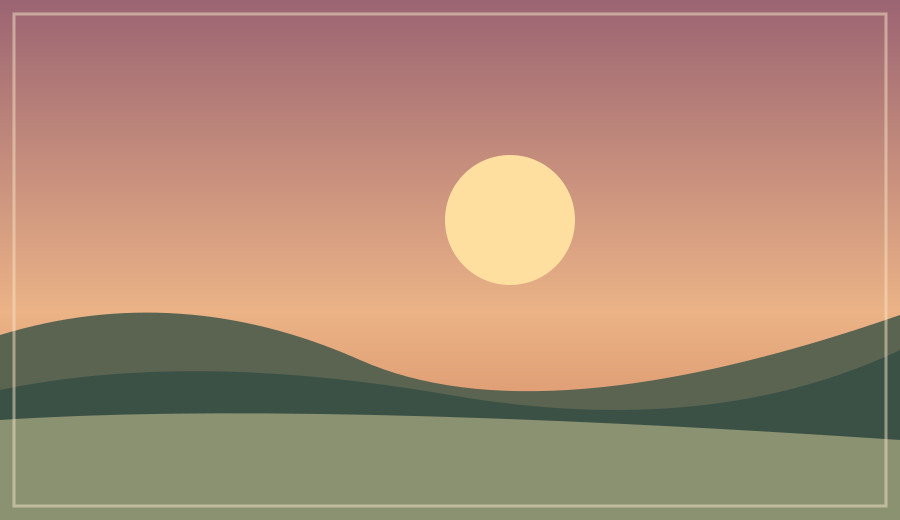

歡迎光臨解憂雜貨店。這裡不販售商品，只收藏那些來不及說出口的話。今晚，留一盞燈，陪你回頭看看自己。
在聽你的故事之前，我想先說說我的故事。
不一定要原諒，也不一定要釋懷。「我還沒辦法謝謝你，但我願意試著理解你。」也可以。
選一片風景，寫下想對過去說的話。

正在把心意收進時光郵筒……
掃描 QR Code，可直接讀取這段信件文字。不需要登入網站，也不會把信件上傳到伺服器。
QR Code 包含你的信件文字，拿到圖片的人都能讀取。部分手機相機只辨識網址，請使用支援「文字 QR Code」的掃碼工具。如要完整留存，請同時下載上方的文字檔。
信架上的三封示意信，陪你找到第一句話。這些不是參與者投稿；你的信不會出現在這裡。
那時候的你，總覺得自己不夠好。謝謝你即使害怕，還是努力走到了今天。
我曾經很討厭你的決定。但現在，我願意慢慢理解，你當時也只是想找到一條路。
有些日子，你只是好好地撐過一天。謝謝你，把我帶到了這裡。
謝謝你，願意回頭看看我。那時的我，也不知道未來會怎麼樣，只能用當時擁有的力氣，試著走下一步。你不必現在就原諒我，也不必把每一段辛苦都說成成長。能和你在這裡相遇，已經很好了。